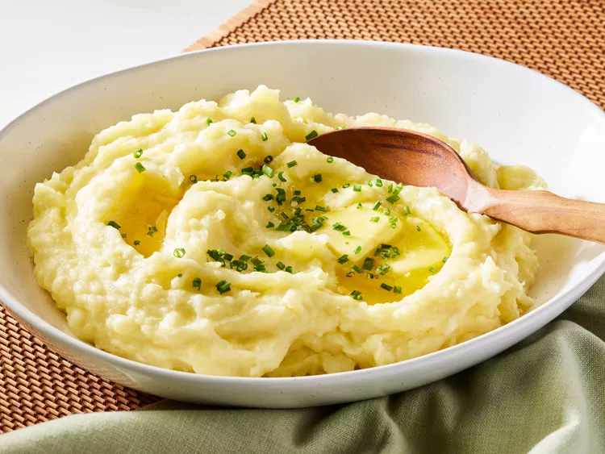

Mashed Potatoes

Ingredients
- Potatoes
- Milk
- Butter
- Garlic
- Seasonings
Steps
- Gather all ingredients
- Combine potatoes, garlic, and salt in saucepan with water
- Bring to boil over high, and then reduce to a medium-low simmer for 10 to 12 minutes
- Drain potatoes and return to saucepan
- Add butter and mash until smooth
- Add seasonings and transfer to a serving bowl
Home